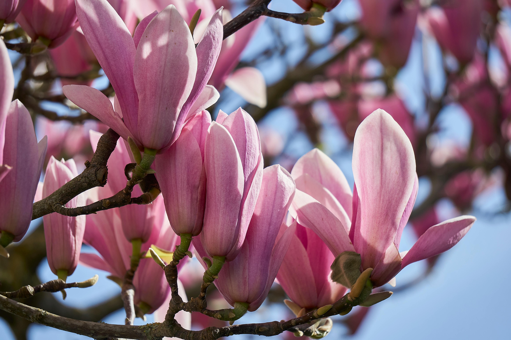

As incriveis flores rosas
As flores rosas são delicadas e encantadoras. Elas simbolizam amor, carinho e gratidão. Rosas, tulipas e peônias são exemplos de flores rosas que trazem um toque suave e bonito a qualquer ocasião, seja em aniversários, casamentos ou simples gestos de apreço. Essas flores, com suas pétalas macias e cores suaves, nunca deixam de encantar e iluminar o ambiente.
Flores rosas em um dia ensolarado
Cuidar de plantas requer atenção a três aspectos principais: água, luz e solo. Regue regularmente, mas evite encharcar, verificando a umidade do solo antes. Garanta que suas plantas recebam a quantidade certa de luz, seja direta ou indireta, conforme a espécie. Use solo adequado, enriquecido com nutrientes necessários. Remova folhas mortas e verifique pragas periodicamente. Com esses cuidados, suas plantas crescerão saudáveis e bonitas.
Presentear alguém especial com uma flor exige um toque de atenção e carinho. Escolha a flor que mais combina com a personalidade e os gostos da pessoa. Certifique-se de que a flor esteja fresca e bem cuidada. Ao entregar, adicione um toque pessoal, como um bilhete carinhoso ou uma mensagem sincera. A apresentação também é importante: um embrulho bonito ou um vaso elegante pode tornar o presente ainda mais especial. O ato de presentear com uma flor deve refletir seus sentimentos e transmitir afeto e apreço de uma maneira simples, mas muito significativa.